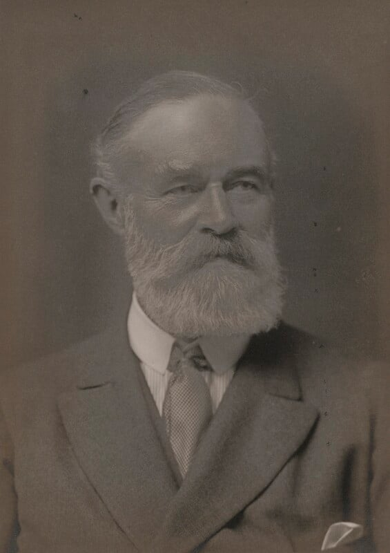

Sir Vesey George Mackenzie Holt
The Holts of Orleton Hall descend from the Cludde family of Shropshire, whose name survives in the hamlet of Cluddley. By the late 14th century, the estate had passed into Holt hands, and Orleton Hall became the family seat. The modern line rose to prominence through Sir Vesey George Mackenzie Holt (d. 1923), who married Mabel Mary Drummond, daughter of Walter Drummond and Isabella Mary Hervey, in 1880. Their son, Martin Drummond Vesey Holt (d. 1956), married Lady Phyllis Hedworth Camilla Herbert, linking the Holts to the Herberts of Powis Castle and the Williamsons of Balgray. This network of landed and professional families placed the Orleton Holts squarely within the upper echelons of British society, combining ancestral estate-holding with institutional influence.
Sir Vesey Holt was not a merchant banker but a director of the Bank of England, serving during a period of major financial and imperial expansion. His role placed him at the heart of British monetary governance, and he was knighted for his service. The Holt name also became associated with Holt’s Military Banking, a firm originally founded by army agents in the early 19th century and later absorbed into the Royal Bank of Scotland. While not directly founded by the Orleton Holts, the shared name and institutional overlap reflect the family's embeddedness in the financial structures of the British state. Martin Drummond Vesey Holt continued the family’s public service tradition, though his career was more private and estate-focused. The Holts of Orleton exemplify a branch of the family whose legacy lies not in trade or industry, but in banking, governance, and landed continuity.
Sir Vesey George Mackenzie Holt (1854-1923)
Portrait from the National Portrait Gallery Sir Vesey George Mackenzie Holt (1854-1923), Banker by Walter Stoneman, bromide print, 1921. NPG Number: Dx67733 Licensed under creative commons.
